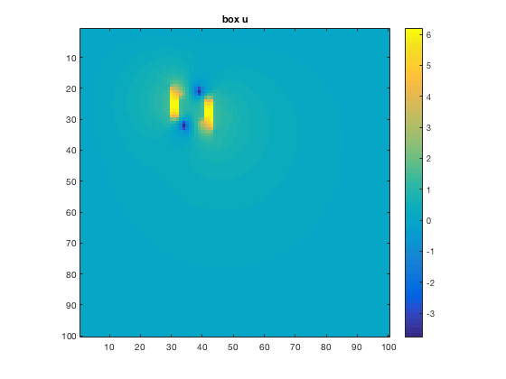
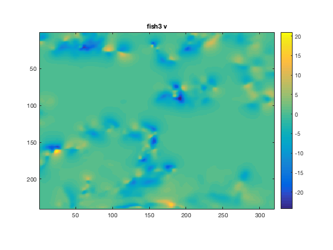
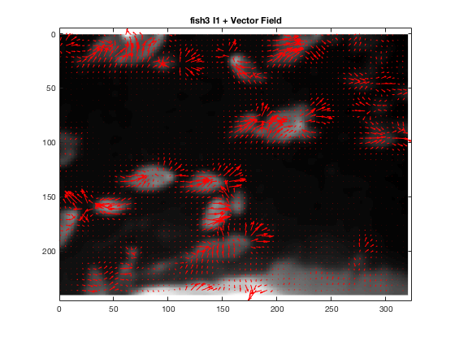

close all
load('optflowData.mat');
sources = {'box','bonanza','fish3','fish4'};
for i=1:length(sources)
source = sources(i);
source = source{1};
switch source
case 'box'
I1 = imsmooth(box(:,:,1),0.5);
I2 = imsmooth(box(:,:,3),0.5);
scale = 1.5;
alphasqHS = 0.02;
iterHS = 4000;
di = 1;
case 'bonanza'
I1 = imsmooth(bonanza(:,:,1),2);
I2 = imsmooth(bonanza(:,:,4),2);
scale = 2.5;
alphasqHS = 10;
iterHS = 100;
di = 10;
case 'fish3'
I1 = imsmooth(fish03(:,:,1),3);
I2 = imsmooth(fish03(:,:,20),3);
scale = 2.5;
alphasqHS = 10;
iterHS = 100;
di = 5;
case 'fish4'
I1 = imsmooth(fish04(:,:,1),3);
I2 = imsmooth(fish04(:,:,12),3);
scale = 2;
alphasqHS = 10;
iterHS = 100;
di = 5;
end
[X.u, X.v] = optflowHS(I1, I2, alphasqHS, iterHS);
lenX = abs(X.u + i*X.v);
disp(['The max length optical vector is: ' num2str(max(lenX(:)))]);
j = 8 * (i - 1);
figure(j + 1);
imagesc(I1);
colormap('gray');
axis image;
title(strcat(source, ' I1'));
figure(j + 2);
imagesc(I2);
colormap('gray');
axis image;
title(strcat(source, ' I2'));
figure(j + 3);
imagesc(I2-I1);
colormap('gray');
colorbar;
axis image;
title(strcat(source, ' I2 - I1'));
figure(j + 4);
imagesc(X.u);
colorbar;
axis image;
title(strcat(source, ' u'));
figure(j + 5);
imagesc(X.v);
colorbar;
axis image;
title(strcat(source, ' v'));
figure(j + 6);
imagesc(I1);
colormap('gray');
axis image;
[M, N] = size(I1);
subx = [1:di:N];
suby = [1:di:M];
[gridx, gridy] = meshgrid(subx, suby);
hold on;
quiver(gridx, gridy, X.u(suby,subx),X.v(suby, subx),scale,'Color','r');
hold off;
title(strcat(source, ' I1 + Vector Field'));
intI = optflow_check(I1, I2, X);
figure(j + 7);
imagesc(intI);
colormap('gray');
axis image;
title(strcat(source, ' Warped I1'));
figure(j + 8);
imagesc(I2 - intI);
colorbar;
title(strcat(source, ' Error Between I1 + Velocity and I2'));
end
function [Xu, Xv] = optflowHS(I1, I2, alphasq, iter)
Xu = zeros(size(I1));
Xv = zeros(size(I2));
[Ix, Iy, It] = differentialsHS(I1, I2);
k = 1;
denom = (k * alphasq + Ix.^2 + Iy.^2);
for i=1:iter
barXu = lapAverage(Xu);
barXv = lapAverage(Xv);
gradConst = (Ix .* barXu + Iy .* barXv + It);
Xu = barXu - (gradConst .* Ix)./ denom;
Xv = barXv - (gradConst .* Iy)./ denom;
end
end
function [Ix, Iy, It] = differentialsHS(I1, I2)
Kt = (1.0/4.0)*[1,1;1,1];
Kx = (1.0/4.0)*[-1,1;-1,1];
Ky = (1.0/4.0)*[-1,-1;1,1];
It = imfilter(I2, Kt) - imfilter(I1, Kt);
Ix = imfilter(I1, Kx) + imfilter(I2, Kx);
Iy = imfilter(I1, Ky) + imfilter(I2, Ky);
end
function [ubar] = lapAverage(u)
k = 3;
A = (1/12.0)*[1,2,1;2,0,2;1,2,1];
ubar = imfilter(u, A);
end
The max length optical vector is: 9.1339
The max length optical vector is: 35.5712
The max length optical vector is: 78.3867
The max length optical vector is: 125.093


 